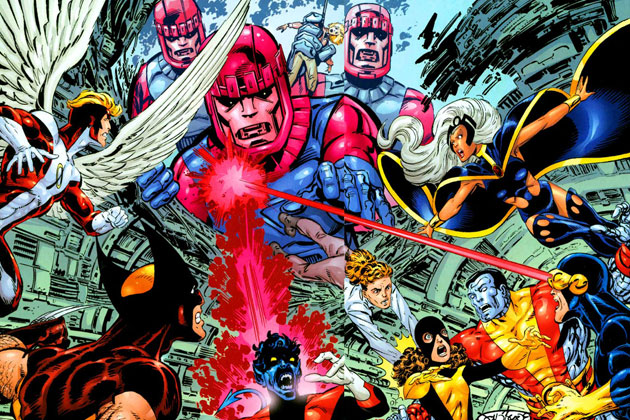
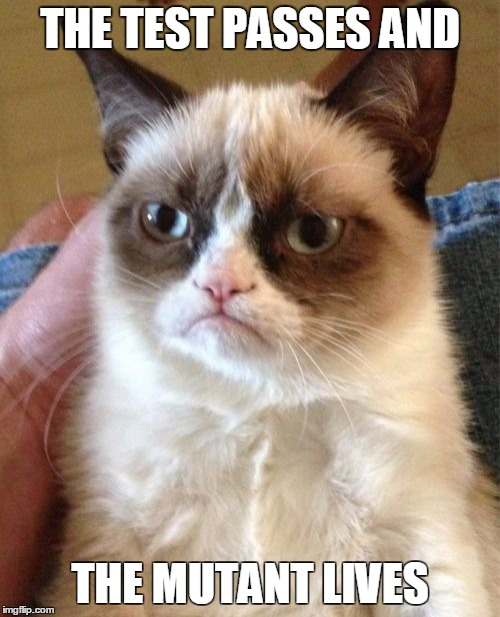
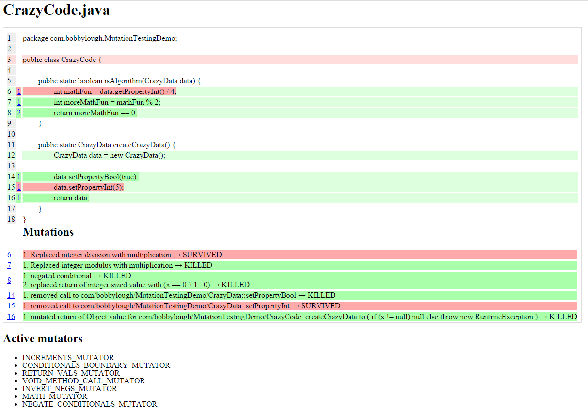
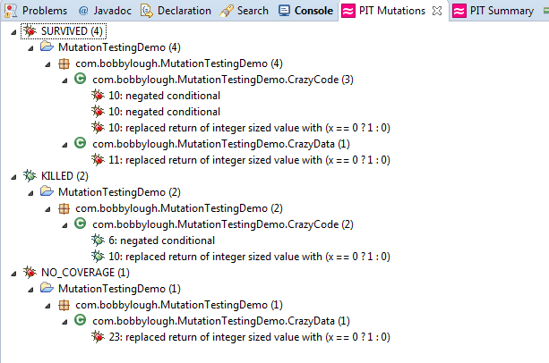

Mutation Testing
Letting a mutant army test our tests
Created by Bobby Lough http://www.bobbylough.com
Our project has great code coverage...
our unit tests are awesome!!!
The End
Protecting our projects are
- quality engineers
- unit tests
- integration tests
- smoke tests
- code coverage reports
- static code analysis tools
- and lots of CTCT awesome sauce
Myth #1
The tests pass so the project must be defect free
Myth #2
Line coverage and conditional code coverage means the tests are good
Line Coverage != Good Tests
public static int sum(int x, int y) {
return x + y;
}@Test
public void testSum(
int result = Code.sum(2,2);
)100% line coverage but no asserts
Passing test with Asserts
but does that mean there are no bugs?
public static int sum(int x, int y) {
return x * y;
}@Test
public void testSum(
int result = Code.sum(2,2);
assertEquals(4, result);
)Unit tests, aka Sentinels, protect our projects from bugs
But who protects our projects from our tests?
Send in the mutants!!!
What is a Mutant?
A mutation is a single syntactic change to the code. Each mutant is different from the original by a single mutation.
These small changes can have big results; such as changing an operator from addition to subtraction.
Then our unit tests execute against the mutant code and in theory our tests should fail because the code is wrong.
Mutation Outcome #1
The test fails
The mutant is caught/killed. Hooray!!!
Mutation Outcome #2
Mutation Outcome #3+
The test times out because the mutant caused an infinite loop
The test runs out of memory.
The mutant was dead on arrival and JVM just didn't like it.
mutant survival score
number of mutants killed / total number of mutants
What are some of the different types of Mutants?
Mutator: Conditionals Boundary
| Original | Mutant |
|---|---|
| > | >= |
| < | <= |
| >= | > |
| <= | < |
Mutator: Negate Conditionals
| Original | Mutant |
|---|---|
| == | != |
| != | == |
| <= | > |
| >= | < |
Mutator: Math
| Original | Mutant |
|---|---|
| + | - |
| - | + |
| * | / |
| / | * |
| % | * |
Mutator: Remove Conditionals
if (condition1 == condition2) {
doSomething();
}changes to:
if (true) {
doSomething();
}Mutator: Return Value
always return true
always return false
always return null
always return 0
always return 3.145
Other Mutators:
- Void method call removal (aka line removal)

- Inline constant changes
- Constructor manipulation
- etc

Lots of mutants
public int additionOrSubtraction(boolean isAddition, int x, int y) {
if (isAddition) { //mutant: replace isAddition with !isAddition
return x + y; //mutants: replace + with -,*,/,%
} else {
return x - y; //mutants: replace - with +,*,/,%
}
}Too many mutants
Mutant testing is CPU and memory intensive. There are really too many possible mutants to run against your unit tests so the mutation engine chooses likely mutants.
PIT - Java Mutation Testing
"PIT is a state of the art mutation testing system, providing gold standard test coverage for Java and the jvm. It's fast, scalable and integrates with modern test and build tooling."
PIT:
- highly configurable
- built in reporting
- works with Maven and ANT
- Eclipse plugin available (PitClipse)
- IntelliJ plugin available
- Sonar integration
- compatible with mocking frameworks
- open source
- and more
PIT reporting:
PitClipse results:
Configuring PIT Build in maven pom - Part 1
org.pitest
pitest-maven
1.1.5
com.bobbylough.MutationTestingDemo.*
com.bobbylough.MutationTestingDemo.*
Configuring PIT Build in maven pom - Part 2
org.pitest
pitest-maven
1.1.5
report
Running PIT
> mvn clean install org.pitest:pitest-maven:mutationCoverage
Realistic results from mutation testing
- some mutants will survive
- example: surviving mutant removed logger statement
- some mutants are ridiculous
- focus on killing the best mutants
- my favorite: removing lines of code in a model builder
Summary
- Unit tests and code coverage provide a false sense of security
- Mutation Testing tests your tests. Watches the Watchers.
- PIT makes mutation testing easy
Resources
- PIT: http://pitest.org/
- Video about PIT from the creator: https://vimeo.com/89083982
- Explaining mutation testing in story form: http://media.ogn.s3.amazonaws.com/ogn27/microslot-ChrisRimmer.pdf